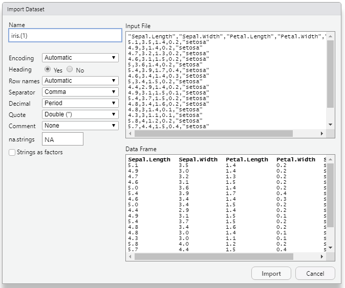

5 Importing data files
In the previous chapter we have discussed the very basics of R programming including installation, launching, basic data types and arithmetic functions. Here, you will learn how to import data into R. It is important to ensure that your data is well prepared before importing it into R to avoid errors.
5.1 Preparing your file
File can be prepared in MS Excel
Use the first row as column headers (or column names). Generally, columns represent variables.
Each row should be one observation (one plot, one plant, one animal, one sample).
For designed experiments, keep the treatment and replication identifiers in their own columns; a treatment name is then repeated once for each replication. This “long” layout is what every analysis function in R expects.
Column names should be compatible with R naming conventions.
5.1.1 Naming conventions:
Avoid names with blank spaces. Bad column name
Sepal width; Good conventionSepal_widthAvoid names with special symbols: ?, $, *, +, #, (, ), -, /, }, {, |, >, < etc. Only underscore can be used.
Avoid beginning variable names with a number. Use letter instead. Good column names: obs_100m or x100m. Bad column name: 100m
Column names must be unique. Duplicated names are not allowed.
R is case sensitive. This means that Name, NAME and name, naMe all are treated as different.
Avoid blank rows in your data
Delete any comments in your file
Replace missing values by NA (denotes Not Available)
If you have a column containing dates, use a four-digit year, preferably in the ISO format YYYY-MM-DD. Good: 2016-01-01. Bad: 01/01/16
A final good looking file

Figure 5.1: An example file
5.1.2 Saving file
I recommend you to save your file in .csv (comma separated value file) format.
Why CSV?
The usual file we save in MS Excel will be saved as XLS files or XLSX files. Workbook files for Microsoft Excel from 97 to 2003 are known as XLS files. The XLSX extension is used by later versions of Excel. All of the data from the worksheets in a workbook, including formatting, charts, graphics, calculations, and more, is contained in the XLS and XLSX file formats.
The Comma Separated Values (CSV) format is a plain text format in which values are separated by commas, whereas the Excel Sheets binary file format (XLS) contains information on all of the worksheets in a file, including both content and formatting. Any spreadsheet programme, including Microsoft Excel, Open Office, Google Sheets, etc., can open CSV files. A straightforward text editor can also be used to open CSV files. Because it is straightforward and compatible with the majority of platforms, it is a very prevalent and well-liked file format for storing and accessing data. But there are certain drawbacks to this simplicity. CSV files can only contain a single sheet without any formatting or formulas.
While CSV files are supported by almost all data upload interfaces, Excel (XLS and XLSX) file types are preferable for storing more complicated data. The CSV file format may be more advantageous if you intend to move your data between platforms or export and import it between interfaces.

5.2 Importing Data set in Rstudio
To import a csv file in Rstudio
click on File then click on Import Dataset then select from Text (base)

Figure 5.4: Importing data set
Select the file and click open

Figure 5.5: Import Dataset dialogue box
In the Import Dataset dialogue box you can change the name of the
dataset in the Box under Name. Heading radio button will be default
‘yes’. Click on import. The dataset will be now imported and ready to
work on.
5.2.1 Alternate methods
5.2.1.1 Importing csv files
Data can also be imported with the read.csv() function: read.csv("path/to/file.csv"). In the examples below the file iris.csv is inside a folder named data in the working directory.
# example
my_data<-read.csv(file = 'data/iris.csv')
# here now the data set iris.csv is stored in the name my_data
# You can now directly do operations on the my_data
summary(my_data)#> Sepal_Length Sepal_Width Petal_length Petal_Width Species
#> Min. :4.60 Min. :2.30 Min. :1.30 Min. :0.20 Length:15
#> 1st Qu.:5.05 1st Qu.:2.92 1st Qu.:1.45 1st Qu.:0.20 Class :character
#> Median :6.30 Median :3.05 Median :4.60 Median :1.50 Mode :character
#> Mean :5.91 Mean :3.02 Mean :3.87 Mean :1.25
#> 3rd Qu.:6.50 3rd Qu.:3.20 3rd Qu.:5.35 3rd Qu.:1.85
#> Max. :7.10 Max. :3.50 Max. :6.00 Max. :2.50
#> NA's :15.2.1.2 Importing excel files
Excel files (.xls and .xlsx) can be read with the readxl package, which needs no other software:
library(readxl)
df <- read_excel("path/file.xlsx", sheet = 1) # sheet number or nameUse forward slashes in file paths even on Windows ("D:/data/yield.csv"), or doubled back-slashes ("D:\\data\\yield.csv"). A single back-slash causes an error. Better still, keep your data inside an RStudio Project and use relative paths such as "data/yield.csv".
5.3 Accessing the variables
The variables in the data can be accessed using $ symbol to the data name
my_data<-read.csv(file = 'data/iris.csv')
# Accessing variable Petal_length
my_data$Petal_length#> [1] 1.4 1.4 1.3 1.5 1.4 4.7 4.5 4.9 4.0 4.6 6.0 5.1 5.9 5.6 5.8
# You can perform functions on them
summary(my_data$Petal_length)#> Min. 1st Qu. Median Mean 3rd Qu. Max.
#> 1.30 1.45 4.60 3.87 5.35 6.005.3.1 Function to access variables easily
Without using the name of the data frame, you can access the variables in the data framework using the attach() function in the R language. The data framework attachment created by the attach() function is removed using the detach() function.
The database is attached to the R search path. This means that the database is searched by R when evaluating a variable, so objects in the database can be accessed by simply giving their names.
my_data<-read.csv(file = 'data/iris.csv')
# Using function attach
attach(my_data)
# Accessing variable Petal_length, now you can call variable name directly without using my_data
Petal_length#> [1] 1.4 1.4 1.3 1.5 1.4 4.7 4.5 4.9 4.0 4.6 6.0 5.1 5.9 5.6 5.8
# You can perform functions on them
summary(Petal_length)#> Min. 1st Qu. Median Mean 3rd Qu. Max.
#> 1.30 1.45 4.60 3.87 5.35 6.00
# Using detach function
detach(my_data)5.4 Some useful functions
5.4.1 str()
R object structures are displayed by str(). str() is frequently used to display a list’s contents.It is used particularly when the data set is huge.
#> 'data.frame': 15 obs. of 5 variables:
#> $ Sepal_Length: num 5.1 4.9 4.7 4.6 5 7 6.4 6.9 5.5 6.5 ...
#> $ Sepal_Width : num 3.5 3 3.2 3.1 NA 3.2 3.2 3.1 2.3 2.8 ...
#> $ Petal_length: num 1.4 1.4 1.3 1.5 1.4 4.7 4.5 4.9 4 4.6 ...
#> $ Petal_Width : num 0.2 0.2 0.2 0.2 0.2 1.4 1.5 1.5 1.3 1.5 ...
#> $ Species : chr "setosa" "setosa" "setosa" "setosa" ...Exercises
- Create a data set in Excel with four columns and save it as a CSV file.
- Import the data set into R and name it
my_data. - Calculate the summary of
my_dataand display its structure withstr().